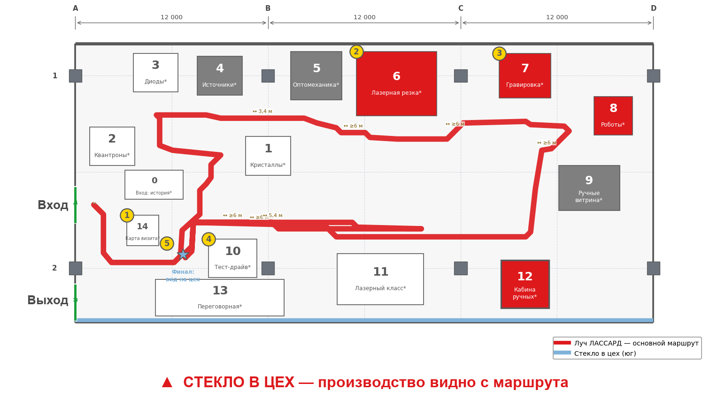

Зоны 0–5: история, кристаллы, квантроны, диоды, источники, оптомеханика.
Зоны 6–10: резка, гравировка, роботы, ручные аппараты, тест-драйв.
Зоны 11–13 завершают визит: класс, кабина, переговорная; 14 — старт и приём образцов. Смотровое стекло 12×3 м — оси A–B, за открытой переговорной.